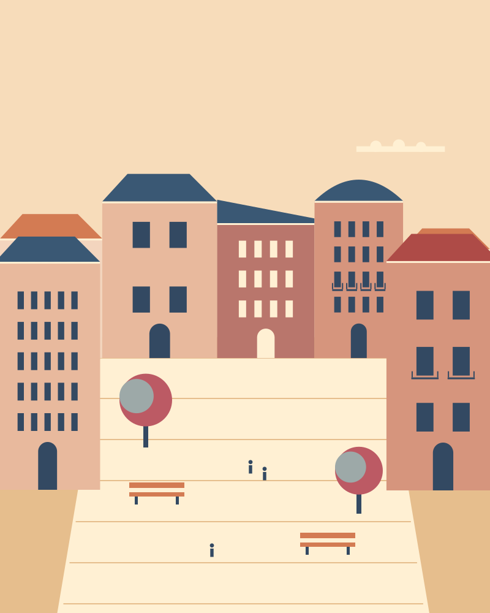
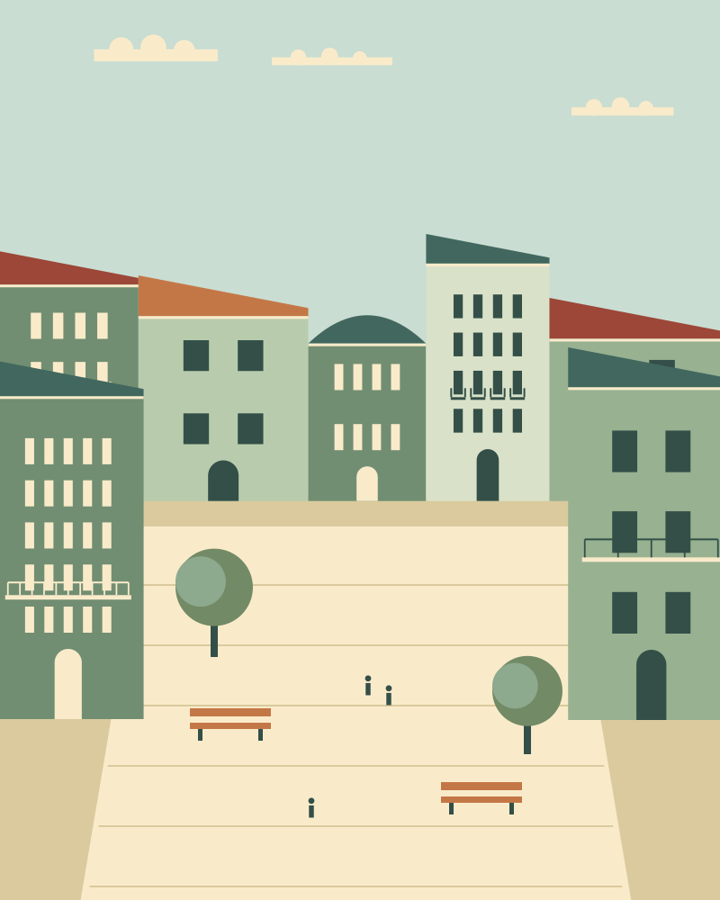
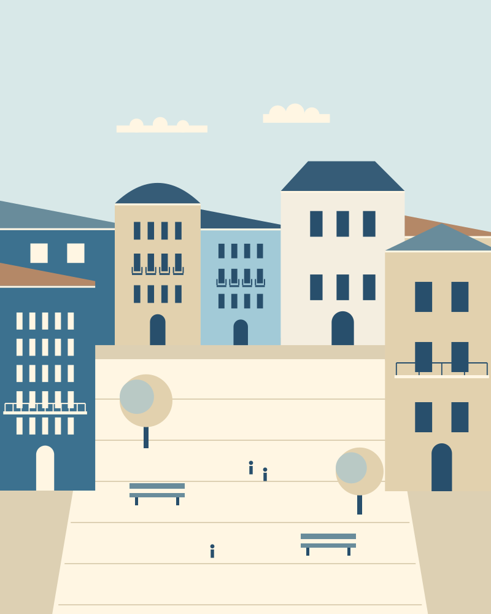
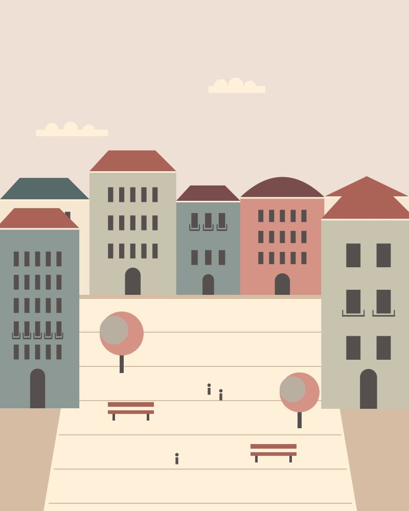

facades-004 / square / plainfacades-005 / hillside / plainfacades-006 / waterfront / gridfacades-007 / closeup / gridfacades-008 / street / gridfacades-009 / square / gridfacades-010 / hillside / gridfacades-011 / waterfront / terracefacades-012 / closeup / terracefacades-013 / street / terrace
facades-014 / square / terracefacades-015 / hillside / terracefacades-016 / waterfront / plainfacades-017 / closeup / plainfacades-018 / street / plainfacades-019 / square / plainfacades-020 / hillside / plainfacades-021 / waterfront / gridfacades-022 / closeup / gridfacades-023 / street / gridfacades-024 / square / gridfacades-025 / hillside / gridfacades-026 / waterfront / terracefacades-027 / closeup / terracefacades-028 / street / terrace
facades-029 / square / terracefacades-030 / hillside / terracefacades-031 / waterfront / plainfacades-032 / closeup / plainfacades-033 / street / plain
facades-034 / square / plainfacades-035 / hillside / plainfacades-036 / waterfront / grid